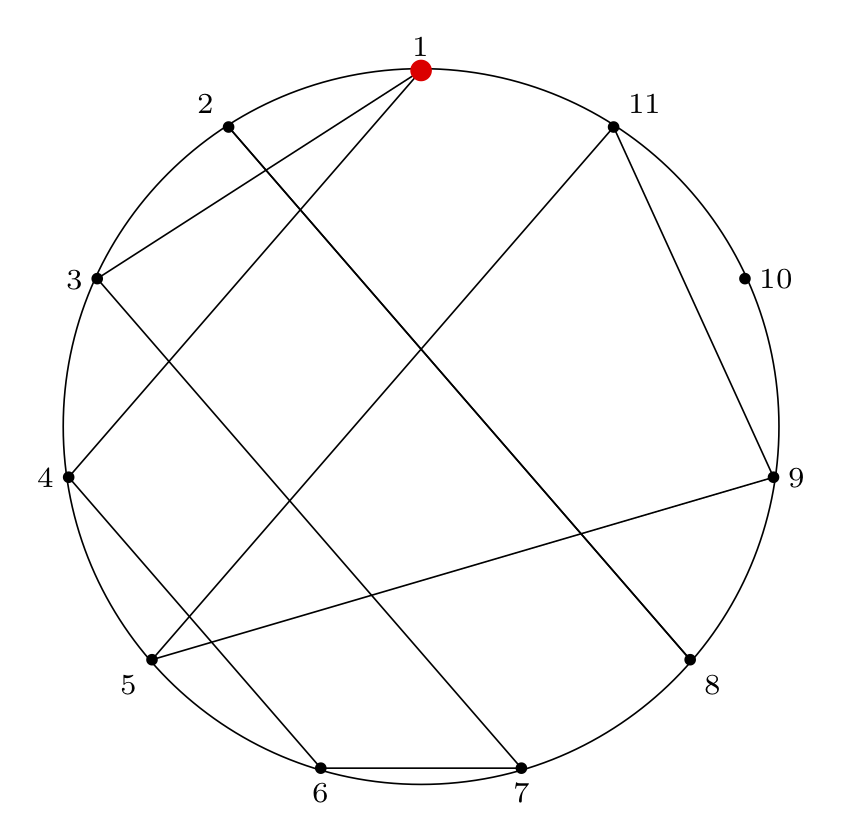
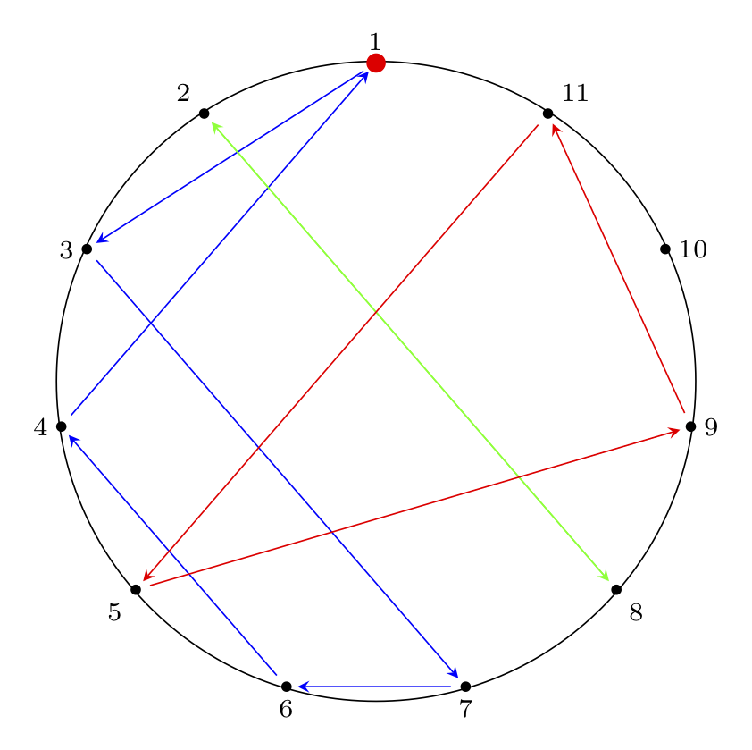

This is Part 1 of an N-part series.
Table of Contents
The Josephus Problem and Variations
The following problem, Cat and Mice, is Puzzle 88
in Boris Kordemsky's The Moscow Puzzles.
Purrer has decided to take a nap. He dreams
he is encircled by \(n\) mice: \(n-1\) gray and 1 white.
He hears is owner saying, "Purrer, you are to
eat each \(m\)-th mouse, keeping the same
direction. The last mouse you eat must be
the white one.
Which mouse should he start with?
This problem presents a scenario that is nearly identical to
a classic problem that has a more grisly backstory: the
Josephus problem.
Donald Knuth presents a more unsettling version of this problem,
so I'll just let his (rather gleeful) description of the original
problem suffice (except - what's this "we" stuff?)
From Section 1.3.2 of The Art of Computer Programming (Vol. 1),
Exercise 22 presents the Josephus Problem:
22. (The Josephus Problem.) There are \(n\) men arranged in a circle. Beginning
with a particular position, we count around the circle and brutally execute
every \(m^{th}\) man (the circle closing as men are decapitated). For example,
the execution order when \(n = 8, m = 4\) is \(54613872\): the first man is fifth
to go, the second man is fourth, etc. Write a program which prints outs the
order of execution when \(n = 24, m = 11\). Try to design a clever algorithm
that works at high speed when \(n\) and \(m\) are large.
The Sushi Boat Variation
You are at the sushi boat restaurant, where plates of
sushi in tiny boats float by in front of you.
There are \(n\) plates of sushi, each on a sushi boat. Each plate of sushi is
labeled \(1 \dots n\) and arranged in order on the boats.
Beginning at plate 1, you count \(m\) plates of sushi,
stopping at the \(m^{th}\) boat and taking the plate of
sushi off the boat to eat it.
In what order will the sushi plates be stacked when you are done?
Which plate of sushi will be eaten last?
More Backstory
More background on the Josephus problem and its various solutions is given in a
letter to the editor from the Fibonacci Quarterly, Issue 1 of 1976 (Part
1 and Part
2) written in response to an
article that gave a solution to the problem of "Idiot's Roulette" (identical to
the Josephus problem as presented above) without referencing the Josephus
problem. Here is the original article.
The Tools
To solve the Josephus problem, we need to use several
conceptual and computational tools. Below we cover
some notation we will use and give links to pages on the
charlesreid1.com wiki
that are useful.
Permutations
We can think of the outcome of the Josephus problem as a
"Josephus permutation" - a permutation that reorders the
sushi plates in the circle (numbered by their positoin in the
circle) into the order in which they are removed from the
circle.
For example, in Knuth's problem statement, he gives
an example of \(n = 8, m = 4\) (eating every 4th plate
of sushi, in a train of 8 sushi boats), which results
in the plates being removed in the following order:
\($
5, 4, 6, 1, 3, 8, 7, 2
$\)
To write this permutation using mathematical notation,
we write two rows. The top row is the ordering
of plates in the circle, the "natural" ordering,
and the second row is the order of removal of plates,
which is the Josephus permutation:
\($
\bigl(\begin{smallmatrix}
1 & 2 & 3 & 4 & 5 & 6 & 7 & 8 \\
5 & 4 & 6 & 1 & 3 & 8 & 7 & 2
\end{smallmatrix}\bigr)
$\)
As Knuth would point out, this Josephus permutation
can be written in 40,319 other equivalent ways (that's
8! total, minus the 1 way shown above) by reordering the
columns (as long as we reorder the columns in the top and
bottom rows in the same way).
We can read this permutation from left to right as follows:
- The first sushi plate (labeled 1) will be eaten fifth;
- The second sushi plate (labeled 2) will be eaten fourth;
- etc.
Ordering the permutation as above (circle index on top,
removal index on bottom) makes it easy to answer the
second question, "Which sushi plate will be eaten last?"
We find 8 in the bottom row (the removal index), and read
the corresponding number in the top row (the plate
number/circle position), plate 6.
If we wish to answer the first question, "in what order will
the plates be removed," we have a bit more work to do.
We mentioned that the above permutation is 1 of a total of
40,320 equivalent ways of writing the same permutation.
Another way of writing it would be to maintain the pairing
between top and bottom but sort the bottom elements:
\($
\bigl(\begin{smallmatrix}
4 & 8 & 5 & 2 & 1 & 3 & 7 & 6 \\
1 & 2 & 3 & 4 & 5 & 6 & 7 & 8
\end{smallmatrix}\bigr)
$\)
Now we can find the order of the plates by reading
the top row right-to-left. The last plate removed
is plate 6, so that will be on top of the stack of
plates (stacks are first in, last out).
We cover permutations and permutation notation
in the context of Rubiks Cubes on the
Rubiks Cube/Permutations
page of the charlesreid1.com wiki.
Cycles
While the above permutation notation is useful,
the variety of ways of expressing the same
permutation is inconvenient. This is where
cycles become useful - cycles are a way of
implicitly representing both rows of the
permutation.
To do this, we "thread" our way through the
permutation to create the cycle of which items
move to which positions.
Starting with the left-most column of the
permutation,
\($
\bigl(\begin{smallmatrix}
1 & 2 & 3 & 4 & 5 & 6 & 7 & 8 \\
5 & 4 & 6 & 1 & 3 & 8 & 7 & 2
\end{smallmatrix}\bigr)
$\)
we know that \(1 \rightarrow 5\). Now we find
the column that has 5 in the top: the fifth
column. We write \(5 \rightarrow 3\). Now we
find the column with 3 in the top: the third
column. We write \(3 \rightarrow 6\). Next, we
write \(6 \rightarrow 8\), then \(8 \rightarrow 2\),
then \(2 \rightarrow 4\). Once we see that the
last step of the cycle is \(4 \rightarrow 1\),
which brings us back to the beginning, we
write that closed cycle in parentheses.
If we have elements left, we repeat the
procedure starting with any of the remaining
elements. Sometimes there is a single cycle,
and sometimes there are multiple cycles.
In this case we have two cycles:
\($
\left( 1 \, 5 \, 3 \, 6 \, 8 \, 2 \, 4 \right) \left( 7 \right)
$\)
This indicates that 7 does not change
position, i.e., the 7th plate of sushi
is eaten 7th.
This notation is very convenient for
finding solutions, and it turns out that
Knuth gives a general solution procedure
for the Josephus problem that involves a
rather complicated application of the cycle
notation, so a solid understanding of
cycle notation is important.
We cover cycle notation in the context of Rubiks Cubes
on the Rubiks Cube/Permutations
page of the charlesreid1.com wiki (in particular,
the sections on Permutation Algebra
that cover intercalation products).
Circular Linked Lists
Among the many ways of solving the Josephus problem,
the easiest method is to just carry out the procedure
by hand to find the final Josephus permutation, then
use it to answer the original question. This technique
is referred to as the simulation technique.
This technique would become infeasible if we were to
ask more difficult versions of the Josephus problem,
such as posing a scenario where there are 5 million
plates of sushi, and we wish to know which position
(which plate of sushi) will be eaten 2,999,998th,
and we also wish to have the answer instantaneously.
If we're dealing with smaller values of n and m,
though, we can simulate a solution to the Josephus
problem using a circular linked list.
Linked Lists
Briefly, a linked list is a type of list whose
elements consist of nodes, small bundles containing
a piece of data (the list item's value) and
pointers to other nodes (the next and/or previous
elements in the list).
See Linked Lists
for notes on linked lists and some answers to
textbook exercises.
See Lists Study Guide
for a summary of important information about
and properties of lists.
Circular Linked Lists:
A circular linked list is just what it sounds like:
each of the elements points to the next element,
and the last element in the list points to the
first element in the list. We can use the list
by maintaining a pointer to a particular item
(the first item in the list).
We can insert items into the list by creating a new
node, and inserting it between two nodes (e.g., the
front and back of the list) by updating the pointers of
the front and back nodes to point to the new list item.
Usefully, we can also remove items from the list
with some pointer manipulation. To remove a node,
we modify the next/previous pointers of the nodes
before/after the doomed node so that they point
to each other instead of to the doomed node.
This allows us to explicitly model the sushi boat
(a.k.a. the "kill ring") in the Josephus problem.
Circular linked lists are covered on the
charlesreid1.com wiki on the Linked Lists/Java/Circular
page, and are implemented in Java in the
cs/java
repo: https://git.charlesreid1.com/cs/java/src/branch/master/lists/linked-lists
A Python implementation used to solve the Josephus
problem is available in the cs/josephus repo:
repo: https://git.charlesreid1.com/cs/josephus
TeX for Diagrams
In addition to writing The Art of Computer Programming,
which has remained a gold standard algorithm textbook
for over 40 years, Knuth also invented the TeX
typesetting system, which is also the gold standard
for typesetting mathematical equations.
We use the PGF/TikZ
package to draw polygons that are useful in
illustrating the circles of the Josephus problem
and in visualizing various permutations.
A few examples and links to Github Gists with TeX
code follow.
Empty Josephus Circle Diagram
Link to gist with TeX code

Here is the TeX code to generate this diagram:
\documentclass[border=2mm]{standalone}
\usepackage{tikz}
\usepackage{xintexpr}
\usetikzlibrary{shapes.geometric}
\begin{document}
\begin{tikzpicture}[scale=3]
% make a node with variable name pol (with the list of features given) at the location (0,0), and don't label it
\node (pol) [draw=none, thick, black!90!black,rotate=0,minimum size=6cm,regular polygon, regular polygon sides=11] at (0,0) {};
% anchor is "corner 1"
% label is 1/2/3/4/etc
% placement is placement w.r.t. coordinate location
\foreach \anchor/\label/\placement in
{corner 1/$1$/above,
corner 2/$2$/above left,
corner 3/$3$/left,
corner 4/$4$/left,
corner 5/$5$/below left,
corner 6/$6$/below,
corner 7/$7$/below,
corner 8/$8$/below right,
corner 9/$9$/right,
corner 10/${10}$/right,
corner 11/${11}$/above right}
\draw[shift=(pol.\anchor)] plot coordinates{(0,0)} node[font=\scriptsize,\placement] {\label};
% draw a circle connecting all points
\draw circle[radius=1.01cm];
% Draw a red dot at the starting point
\filldraw[red] (pol.corner 1) circle[radius=0.8pt];
% optional: black dots at each circle location
\filldraw[black] (pol.corner 2) circle[radius=0.4pt];
\filldraw[black] (pol.corner 3) circle[radius=0.4pt];
\filldraw[black] (pol.corner 4) circle[radius=0.4pt];
\filldraw[black] (pol.corner 5) circle[radius=0.4pt];
\filldraw[black] (pol.corner 6) circle[radius=0.4pt];
\filldraw[black] (pol.corner 7) circle[radius=0.4pt];
\filldraw[black] (pol.corner 8) circle[radius=0.4pt];
\filldraw[black] (pol.corner 9) circle[radius=0.4pt];
\filldraw[black] (pol.corner 10) circle[radius=0.4pt];
\filldraw[black] (pol.corner 11) circle[radius=0.4pt];
\end{tikzpicture}
\end{document}
Josephus Circle Diagram With Permutation Paths
Next, we can illustrate cycles in the permutation
by drawing paths between connected nodes.
The edges are directed (1 -> 4 is not the
same as 4 -> 1). We draw both directed and
undirected versions.
Link to gist with TeX code


The code to generate these diagrams is below.
Undirected Paths:
\documentclass[border=2mm]{standalone}
\usepackage{tikz}
\usepackage{xintexpr}
\usetikzlibrary{shapes.geometric}
\begin{document}
\begin{tikzpicture}[scale=3]
% make a node with variable name pol (with the list of features given) at the location (0,0), and don't label it
\node (pol) [draw=none, thick, black!90!black,rotate=0,minimum size=6cm,regular polygon, regular polygon sides=11] at (0,0) {};
% anchor is "corner 1"
% label is 1/2/3/4/etc
% placement is placement w.r.t. coordinate location
\foreach \anchor/\label/\placement in
{corner 1/$1$/above,
corner 2/$2$/above left,
corner 3/$3$/left,
corner 4/$4$/left,
corner 5/$5$/below left,
corner 6/$6$/below,
corner 7/$7$/below,
corner 8/$8$/below right,
corner 9/$9$/right,
corner 10/${10}$/right,
corner 11/${11}$/above right}
\draw[shift=(pol.\anchor)] plot coordinates{(0,0)} node[font=\scriptsize,\placement] {\label};
% solution for n = 11, m = 4:
% ( 1 3 7 6 4 ) ( 2 8 ) ( 5 9 11 ) ( 10 )
% internal paths
% cycle (1 3 7 6 4)
\path [-] (pol.corner 1) edge (pol.corner 3);
\path [-] (pol.corner 3) edge (pol.corner 7);
\path [-] (pol.corner 7) edge (pol.corner 6);
\path [-] (pol.corner 6) edge (pol.corner 4);
\path [-] (pol.corner 4) edge (pol.corner 1);
% cycle 2 (2 8)
\path [-] (pol.corner 2) edge (pol.corner 8);
\path [-] (pol.corner 8) edge (pol.corner 2);
% cycle 3 (5 9 11 )
\path [-] (pol.corner 5) edge (pol.corner 9);
\path [-] (pol.corner 9) edge (pol.corner 11);
\path [-] (pol.corner 11) edge (pol.corner 5);
% draw a circle connecting all points
\draw circle[radius=1.01cm];
% Draw a red dot at the starting point
\filldraw[red] (pol.corner 1) circle[radius=0.8pt];
% optional: black dots at each circle location
\filldraw[black] (pol.corner 2) circle[radius=0.4pt];
\filldraw[black] (pol.corner 3) circle[radius=0.4pt];
\filldraw[black] (pol.corner 4) circle[radius=0.4pt];
\filldraw[black] (pol.corner 5) circle[radius=0.4pt];
\filldraw[black] (pol.corner 6) circle[radius=0.4pt];
\filldraw[black] (pol.corner 7) circle[radius=0.4pt];
\filldraw[black] (pol.corner 8) circle[radius=0.4pt];
\filldraw[black] (pol.corner 9) circle[radius=0.4pt];
\filldraw[black] (pol.corner 10) circle[radius=0.4pt];
\filldraw[black] (pol.corner 11) circle[radius=0.4pt];
\end{tikzpicture}
\end{document}
Directed Paths:
\documentclass[border=2mm]{standalone}
\usepackage{tikz}
\usepackage{xintexpr}
\usetikzlibrary{shapes.geometric}
\begin{document}
\begin{tikzpicture}[scale=3]
% make a node with variable name pol (with the list of features given) at the location (0,0), and don't label it
\node (pol) [draw=none, thick, black!90!black,rotate=0,minimum size=6cm,regular polygon, regular polygon sides=11] at (0,0) {};
% anchor is "corner 1"
% label is 1/2/3/4/etc
% placement is placement w.r.t. coordinate location
\foreach \anchor/\label/\placement in
{corner 1/$1$/above,
corner 2/$2$/above left,
corner 3/$3$/left,
corner 4/$4$/left,
corner 5/$5$/below left,
corner 6/$6$/below,
corner 7/$7$/below,
corner 8/$8$/below right,
corner 9/$9$/right,
corner 10/${10}$/right,
corner 11/${11}$/above right}
\draw[shift=(pol.\anchor)] plot coordinates{(0,0)} node[font=\scriptsize,\placement] {\label};
% solution for n = 11, m = 4:
% ( 1 3 7 6 4 ) ( 2 8 ) ( 5 9 11 ) ( 10 )
% internal paths
% cycle (1 3 7 6 4)
\path [->, shorten > = 3 pt, blue, shorten < = 4 pt, > = stealth] (pol.corner 1) edge (pol.corner 3);
\path [->, shorten > = 3 pt, blue, shorten < = 4 pt, > = stealth] (pol.corner 3) edge (pol.corner 7);
\path [->, shorten > = 3 pt, blue, shorten < = 4 pt, > = stealth] (pol.corner 7) edge (pol.corner 6);
\path [->, shorten > = 3 pt, blue, shorten < = 4 pt, > = stealth] (pol.corner 6) edge (pol.corner 4);
\path [->, shorten > = 3 pt, blue, shorten < = 4 pt, > = stealth] (pol.corner 4) edge (pol.corner 1);
% cycle 2 (2 8)
\path [->, shorten > = 3 pt, green, shorten < = 4 pt, > = stealth] (pol.corner 2) edge (pol.corner 8);
\path [->, shorten > = 3 pt, green, shorten < = 4 pt, > = stealth] (pol.corner 8) edge (pol.corner 2);
% cycle 3 (5 9 11 )
\path [->, shorten > = 3 pt, red, shorten < = 4 pt, > = stealth] (pol.corner 5) edge (pol.corner 9);
\path [->, shorten > = 3 pt, red, shorten < = 4 pt, > = stealth] (pol.corner 9) edge (pol.corner 11);
\path [->, shorten > = 3 pt, red, shorten < = 4 pt, > = stealth] (pol.corner 11) edge (pol.corner 5);
% draw a circle connecting all points
\draw circle[radius=1.01cm];
% draw a red dot at the starting point
\filldraw[red] (pol.corner 1) circle[radius=0.8pt];
% optional: black dots at each circle location
\filldraw[black] (pol.corner 2) circle[radius=0.4pt];
\filldraw[black] (pol.corner 3) circle[radius=0.4pt];
\filldraw[black] (pol.corner 4) circle[radius=0.4pt];
\filldraw[black] (pol.corner 5) circle[radius=0.4pt];
\filldraw[black] (pol.corner 6) circle[radius=0.4pt];
\filldraw[black] (pol.corner 7) circle[radius=0.4pt];
\filldraw[black] (pol.corner 8) circle[radius=0.4pt];
\filldraw[black] (pol.corner 9) circle[radius=0.4pt];
\filldraw[black] (pol.corner 10) circle[radius=0.4pt];
\filldraw[black] (pol.corner 11) circle[radius=0.4pt];
\end{tikzpicture}
\end{document}
Next Steps: Examples and Solutions
So far in Part 1 we have covered some common
forms of the Josephus problem.
In Part 2 we'll cover some examples
of different \(n, m\) values (\(n\) is circle size,
\(m\) is skip length) and show how the
process plays out.
In Part 3 we will show the solution of the
special case of \(m = 2\) (the double-step case).
In Part 4 we will show several ways to solve
the general case, and walk through some examples
where we apply the solution procedure.